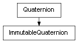

class cymel.core.datatypes.quaternion.ImmutableQuaternion¶

-
class
cymel.core.datatypes.quaternion.ImmutableQuaternion¶ ベースクラス:
cymel.core.datatypes.quaternion.QuaternionQuaternionのimmutableラッパー。Methods:
conjugateIt(*args, **kwargs)invertIt(*args, **kwargs)negateIt(*args, **kwargs)normalize(*args, **kwargs)normalizeIt(*args, **kwargs)set(*args, **kwargs)setAngle(*args, **kwargs)setToIdentity(*args, **kwargs)setToXAxis(*args, **kwargs)setToYAxis(*args, **kwargs)setToZAxis(*args, **kwargs)setValue(*args, **kwargs)Methods Details:
-
conjugateIt(*args, **kwargs)¶
-
invertIt(*args, **kwargs)¶
-
negateIt(*args, **kwargs)¶
-
normalize(*args, **kwargs)¶
-
normalizeIt(*args, **kwargs)¶
-
set(*args, **kwargs)¶
-
setAngle(*args, **kwargs)¶
-
setToIdentity(*args, **kwargs)¶
-
setToXAxis(*args, **kwargs)¶
-
setToYAxis(*args, **kwargs)¶
-
setToZAxis(*args, **kwargs)¶
-
setValue(*args, **kwargs)¶
-